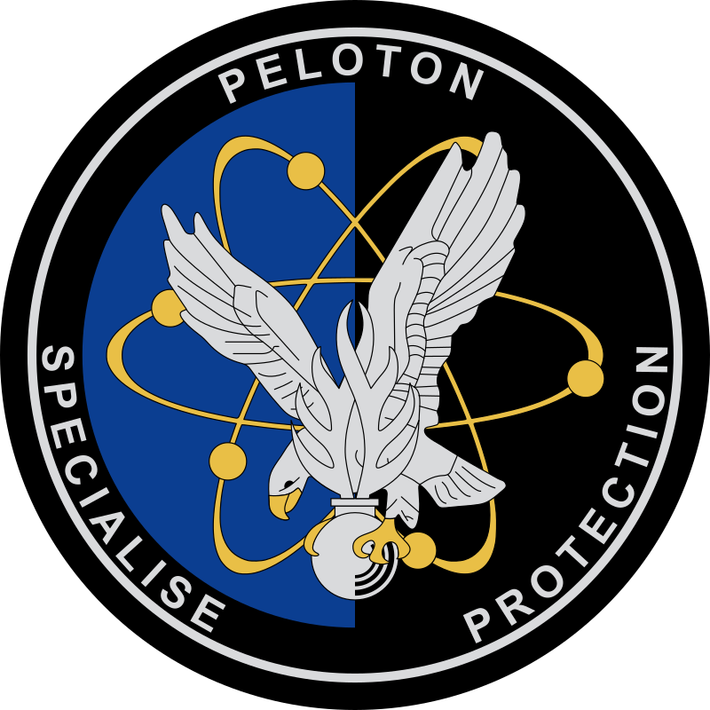

Grades
En Gendarmerie Départementale il existe 24 grades différents. Le corps
des officiers généraux
des officiers supérieurs
des officiers subalternes
des sous-officiers supérieurs
des sous-officiers subalternes
des gendarmes adjoints volontaires
et des élèves.
Officiers Généraux
| Général d'Armée |
Général de Corps d'Armée |
Général de Division |
Général Brigade |

|

|

|

|
Officiers Supérieurs
| Colonel |
Lieutenant Colonel |
Commandant, Chef d'Escadron |

|

|

|
Officiers Subalternes
| Capitaine |
Lieutenant |
Sous-Lieutenant |
Aspirant |

|

|

|

|
Sous-Officiers Supérieurs
| Major |
Adjudant-Chef |
Adjudant |

|

|

|
Sous-Officiers Subalternes
| Maréchal des Logis Chef |
Gendarme de Carrière |
Gendarme sous Contrat |

|

|

|
Gendarmes Adjoints Volontaires
| Maréchal des Logis |
Brigadier-Chef |
Brigadier |
GAV 1ère classe |
GAV 2ème classe |

|

|

|

|

|
Élèves
| Élève Officier |
Élève Gendarme |

|

|
Unités
Les pelotons de gendarmerie de haute montagne, ou PGHM, ont été créés à la suite d'un tragique accident. En effet, le 22 décembre 1956, deux jeunes hommes, un Parisien et un Belge commencent l'ascension hivernale du mont Blanc par l'éperon de la Brenva. La météo se dégrade rapidement et les deux hommes se retrouvent bloqués sur un sérac, au milieu d'une tempête. Ils sont suivis à la jumelle depuis le sommet, à la longue vue depuis Chamonix.
")
Pour faire face au développement de la délinquance tout en soulageant les brigades de la gendarmerie départementale, la Gendarmerie créé en 1975 des « détachements d'intervention » qui prennent en 1977 l'appellation de « Pelotons de surveillance et d'intervention de la Gendarmerie » ou PSIG. Lors de leur création, les PSIG sont composés de sous-officiers et, dans un premier temps, de gendarmes auxiliaires puis, après la suspension du service militaire en 1999, de gendarmes adjoints volontaires (GAV) et également de réservistes appartenant à la réserve opérationnelle de la Gendarmerie nationale.

Le peloton spécialisé de protection de la Gendarmerie (PSPG) est une unité d'élite de contre-terrorisme chargée de la protection des infrastructures nucléaires civiles et spécialisées dans le domaine de l’intervention. Formés par le GIGN, le PSPG assure aussi des missions d'intervention au profit des groupements de gendarmerie. Créé en 2009 à la suite d'un accord entre Électricité de France et la Gendarmerie nationale, le PSPG est implanté dans les centres nucléaires de production d'électricité (CNPE) français. Un PSPG compte, au minimum, une quarantaine de gendarmes. Ce dispositif a été expérimenté sur deux CNPE, celle de Flamanville et celle de Cattenom à partir du 17 septembre 2007.